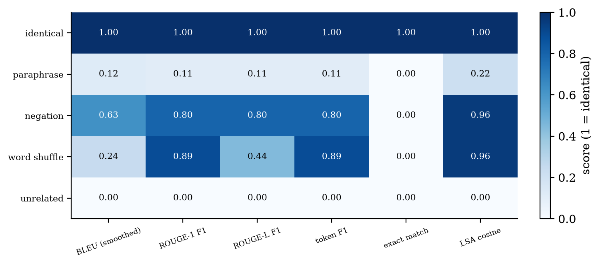
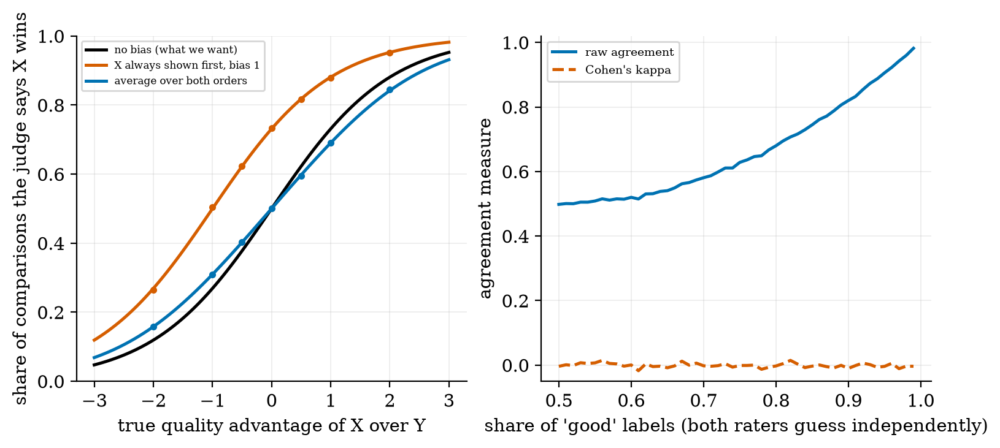
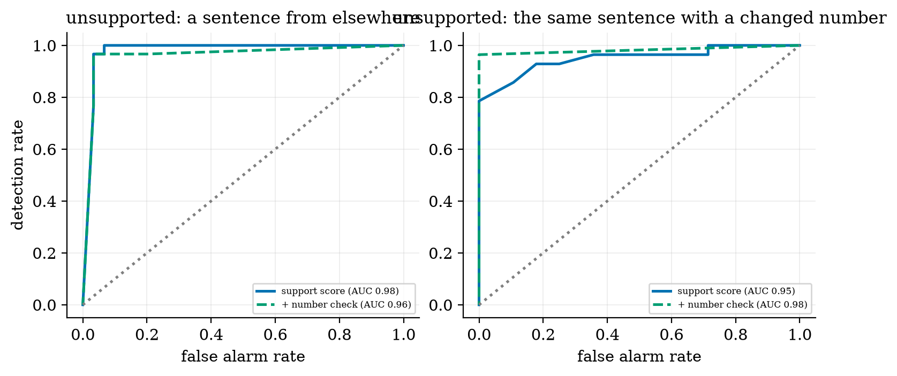
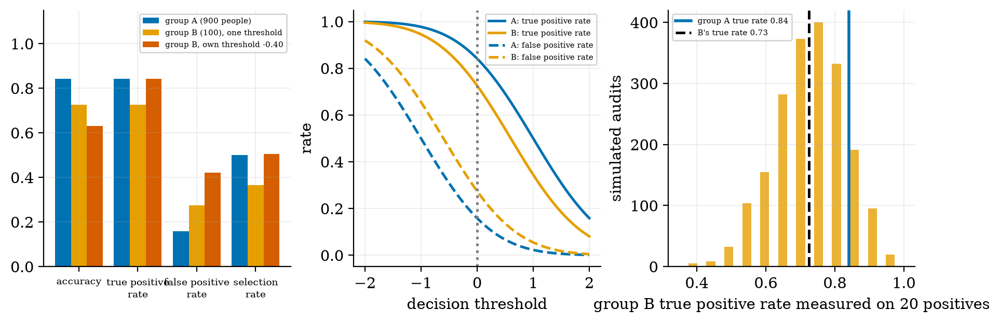
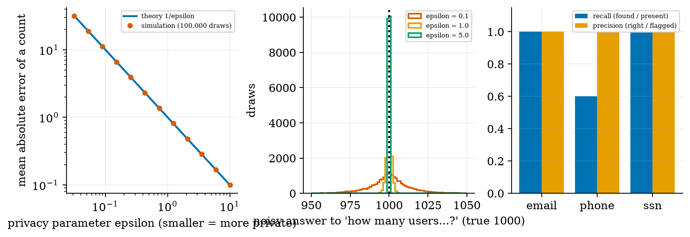
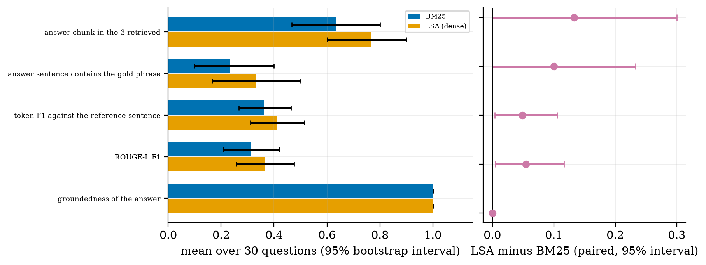

compute BLEU, ROUGE, token F1 and exact match by hand and say when they mislead;
explain LLM-as-judge, position bias, swapping orders, and why raw agreement misleads (kappa);
check an answer for groundedness and catch altered numbers;
measure fairness (parity, equal opportunity, equalized odds) and say why you cannot always have all three;
explain privacy risks and the differential-privacy noise mechanism, and write an honest evaluation report.
The big picture
Evaluating a language model is hard because there are many correct answers, and some wrong ones look right. Every method is a proxy: overlap metrics (cheap, shallow), model judges (closer to meaning, biased) and humans (best, slow).
Overlap is not meaning. The negation “attention does not let every word look at every other word” scores ROUGE-L 0.80 and an embedding similarity of 0.96; the paraphrase scores about 0.11.
Judges are biased. If a judge favours the first answer (bias 1), a true tie looks like a 73% win; swapping the order and averaging brings it to exactly 50%. Two raters who guess independently agree 82% of the time yet have kappa ≈ 0.
Fairness and privacy are trade-offs. 83% overall accuracy hid a 0.12 true-positive-rate gap; equalising it left a 0.26 false-positive gap. A regex PII detector found 0 of 5 names and missed 2 of 5 phone formats. Laplace noise gives privacy at an exact accuracy cost (error = 1/ε).
Honest reporting: with 30 questions most differences are within noise; always give intervals, and say what was simulated (the judge) and what was measured.
Key equations
BLEU: modified n-gram precisions and a brevity penalty.
A judge with position bias β toward the first slot.
Cohen’s kappa: agreement corrected for chance.
Exact error rates of a threshold classifier with Gaussian scores.
Laplace mechanism: ε-differential privacy.
Figures

Five candidates against one reference: overlap metrics under-score a paraphrase and over-score a negation.

Position bias of a judge (simulation) and why raw agreement can mislead; swapping orders removes most of the bias.

Detecting unsupported sentences: the number check helps against altered figures (AUC 0.95 → 0.98).

Group metrics with one threshold or separate thresholds, and how noisy a small-group audit is.

Laplace noise error 1/ε and what a regex PII detector finds and misses.

An evaluation report for the course RAG system with bootstrap intervals and a paired comparison.
Try it in the playground
Each link opens the widget with good starting settings. Every option has a plain-English label and a one-line help text.
Metric lab: BLEU, ROUGE, F1
Score any two texts; try a paraphrase and a negation.
Plain NumPy; every metric is tested against hand-computed cases. After downloading and unzipping the All code (.zip):
pip install -r requirements.txt
python codes/evaluation/evaluation_np/evaluation_np.py # BLEU-2 = 0.1353 and ROUGE-L = 0.7273 by hand
python codes/evaluation/evaluation_np/tests/test_evaluation_np.py # 12 tests, prints: ok
python figures/fig06_ragreport.py # the evaluation report for the course RAG
The Colab notebook evaluates a RAG application with a real small model and a model judge (both orders), and compares the judge with your labels using kappa. It was written but not executed while authoring.
An honest note. The judge results are a simulation of a stated bias model, not measurements of a real judge; the RAG report uses an extractive answerer, so its groundedness is 1 by construction.
Self-check
Answer in your head first, then click to reveal.
What is the BLEU-2 score of “the cat” against “the cat sat on the mat”?
e−2 = 0.1353 (precisions 1 and 1; brevity penalty e1−6/2).
Why can two raters who agree 82% of the time have kappa about 0?
Two raters who both say ‘good’ 90% of the time independently agree 82% by chance; kappa removes chance agreement.
What does swapping the order of two answers do for a biased judge?
It averages out the position bias: a true tie becomes exactly 50%.
Name something that cannot be equalised at the same time as equal opportunity when base rates differ.
The false positive rates or the selection rates.
What is the mean absolute error of a Laplace-noised count at ε = 1?
About 1 (the noise scale Δ/ε = 1).
Why is a regex PII detector not enough?
It finds fixed formats only: it missed international and dotted phone numbers and found no names or addresses.